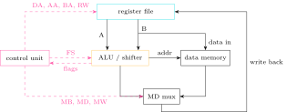

Model
- Register file: registers, two read ports (
A select,B select) and one write port (D select,write). - Operand selection: the B bus takes a register or a constant (
MB), the D input takes the function unit or memory (MD). - Function unit: ALU and shifter, with status flags (overflow),
 (carry),
(carry),  (negative), (zero).
(negative), (zero). - Control word: the tuple (DA, AA, BA, MB, FS, MD, RW, MW) of fields that fixes one micro-operation, e.g. .
- Control unit: fetches an instruction from memory, decodes it into one control word (single-cycle) or a sequence of them (multi-cycle, an FSM), and updates the program counter (sequential, branch, jump).
- Memory-mapped I/O: peripherals respond to addresses, so load and store instructions talk to devices.
Picture

Intuition
The datapath is the kitchen, the control word the recipe line for this minute, the control unit the cook reading the recipe.
Pitfall
Every field of the control word must be specified in every cycle, including "don't write": a forgotten write enable silently corrupts a register.